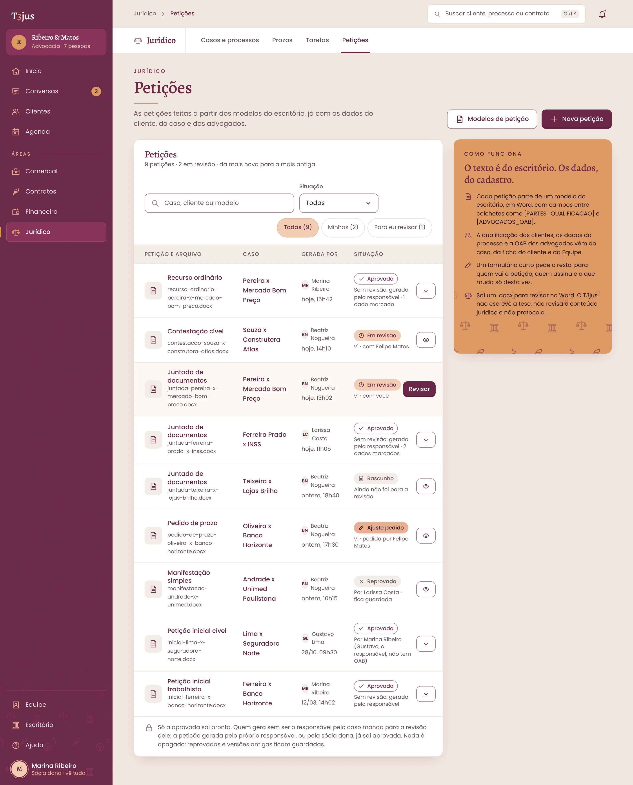

Petições (sócia dona)
Busca, filtro por situação, Todas, Minhas e Para eu revisar. Cada linha: modelo e arquivo, caso (leva à ficha), quem gerou e quando, e a situação (Rascunho, Em revisão, Ajuste pedido, Aprovada, Reprovada) com o detalhe: com quem está, quem decidiu, dados marcados. Só a aprovada tem Baixar; a que espera Marina tem Revisar.
Abrir: peticoes.html?estado=peticoes (estreite a janela para ver o celular)